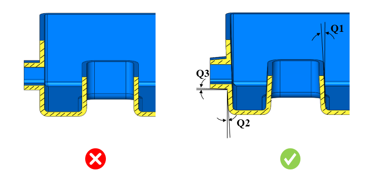

引き抜き方向に対して、パーツの内側および外側の壁面に抜き勾配角度を設ける必要があります。
抜き勾配角度の設計は、プラスチック部品を設計する際の重要な要素です。プラスチック部品はコアに密着して収縮しやすい傾向があり、これによりコア表面との接触圧力が高まり、コアと部品の間の摩擦が増加します。その結果、金型から部品を離型することが困難になります。そのため、部品の離型を補助するために、適切な抜き勾配角度を設計する必要があります。また、抜き勾配角度を設けることで、サイクルタイムを短縮し、生産性を向上させることができます。抜き勾配角度は、引き抜き方向に沿った部品の内側または外側の壁面に適用する必要があります。
一般的なガイドラインとして、コアには0.5度、キャビティには5度、サイドコアには0.25度の抜き勾配角度が推奨されます。
DFMProは、指定された引き抜き方向に基づいて、コア、キャビティ、およびサイドコアの抜き勾配角度を識別します。これらの抜き勾配角度は、構成された値と照合して検証されます。
ユーザーは、デフォルトで構成されている値を編集することができます。
ルールUIでは、材料の一覧が 材料マッピング から読み込まれ、ユーザーは材料およびその値を構成することができます。
材料およびその値を構成した後、Ctrl+M コマンドを使用して、ルールUI上で材料グループおよびグレードごとに構成された材料の一覧をフィルタリングして表示することができます。同じキー（Ctrl+M）を使用して、フィルタを解除することもできます。

ここで、
Q1 = コアの抜き勾配角度
Q2 = キャビティの抜き勾配角度
Q3 = サイドコアの抜き勾配角度